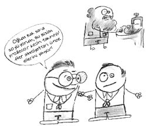

Bazı Psikolojik rahatsızlıklar
Otizm
Tom Cruise ve Dustin Hoffman’ın oynadığı Yağmur Adam filminden sonra Rainman olarak da bilinen bir hastalıktır. Bu kişiler, bazı konularda olağanüstü zeki olmalarına rağmen, çevreyle ilişki kurmakta tamamen başarısız ve içe dönüktürler. Kendi hayalleri ve düşünceleriyle meşguldürler. Mesela, ünlü nörolog Oliver Sacks’ın hastası olan otistik ikizler, kendi yaşam deneyimlerine dair en ufak bir ayrıntıyı unutmaz ve takvimsel bir algoritmayı kullanarak haftanın hangi gününün geçmişte ayın kaçına denk gelmiş olduğunu ve ileride kaçına denk geleceğini bilirler. Eğer bu tarih yaşadıkları bir tarih ise, o gün havanın durumunu ve ne tür olaylar olduğunu hatırlayabilirler. Üç yüz sayısı olan numaraları kolaylıkla tekrar edebilirler fakat basit matematiksel işlemleri yapamazlar.
Sacks, şahit olduğu bir olayı şöyle anlatır: “Bir gün masalarında duran bir kibrit kutusu yere düşüp kibritler yere saçıldığında ikisi de birden yüz on bir diye bağırdılar... Nasıl bu kadar çabuk saydınız diye sordum. Saymadık, gördük, dediler.”
Otistikler sosyal çevreye tepkisiz, içe kapanık, iletişim güçlüğü çeken, göz temasından kaçınan, şefkate karşı duyarsız, cansız nesnelere düşkün, düzenin bozulmasına yönelik aşırı tepkili, monoton, tekrarlamalı hareketleri olan kişilerdir. El çırpma, dönen nesnelere uzun uzun bakma gibi eylemler gösterirler. Kurdukları düzenin bozulması halinde kendilerine zarar verici tepkiler verebilirler.
Şizofreni
En basit tanımıyla “kişilik parçalanması” olarak bilinir ki kişilik bir kere parçalandı mı kolay kolay bütünlenmez.
Kişi iki farklı gerçekliğin içinde yaşamaktadır. Genellikle 16-25 yaş civarında görülür. İsteksizlik, ilgi kaybı, aileden ve arkadaşlardan uzaklaşma, mistik olaylarla aşırı ilgilenmeye başlama, uyku düzeninin bozulması, çökkünlük, iştah azalması, çabuk sinirlenme, başkalarına ya da kendine zarar verme düşüncesi, kendine bakmama veya alışılmışın dışında giyinme, cinsel konularla fazla meşgul olma, halüsinasyonlar, yüz ifadelerinde azalma ya da tuhaf yüz mimikleri şizofreni belirtilerinden bazılarıdır.
Şizofreninin halk arasında, şu şekillerde tedavi edilmeye(!) çalışıldığı görülür:
Donuk bir yüz ifadesine sahipse, “İsmini vermek istemediğim bir hayvanın trene bakması gibi bakma bana Namık!” şeklinde uyarıcı…
Cinsel konularla fazla meşgulse, “Gene ne var Küçük Coşkun? Sen şimdi bu karpuzları da göğüs gibi görüyorsundur.” şeklinde esprili…
Hasta olduğunu kabul etmiyorsa, “Sarhoş da sarhoş değil, suçlu da suçlu değil zaten. Ama sen gerçekten hasta değilsin, delisin deli!” şeklinde gerçekçi…
Olmayan şeyleri yaşadığını sanıyorsa, “Saçmalama, popondan uydurup uydurup anlatıyon!” şeklinde yalanlayıcı…
Dinle aşırı ilgiliyse, “Ecinnilere mi karıştın ne, bak kendine gel!” şeklinde kendine getirici…
Kasılıp kitlendiyse, “Bak gene sıktı kendini bak. Rıfat çak şuna iki tane de açılsın!” şeklinde gevşetici…
BİTMEZ…
Panik atak
Başta panik bozukluk olmak üzere birçok psikiyatrik bozuklukta ve bazı fiziksel hastalıklarda görülen yoğun korku, kaygı, endişe karışımı bir nöbettir.
Panik atağı olan kişi kötü bir şey olacağını veya öleceğini zanneder. Bu nedenle panik ataklar kontrolcü kişilerdir. Evlerinin, işlerinin yanında olmasına çalışırlar. Eşleri, çocukları geç gelince telaşlanırlar. Panik atak rahatsızlığı hastalık hastası denilen rahatsızlıkla benzerlik gösterir. Doktor iyisin dese bile inanmaz, “Bu bir şey bilmiyor!” diyerek doktor doktor gezerler. Tabi bu esnada psikolojik tedavi görmedikleri için de panik atakları artar. Ama bu, her doktora inanmayan kişi de panik atak demek değildir. Çünkü doktor, “Bir şeyin yok.” dedikten üç gün sonra ölen kişiler de mevcuttur. Di mi ama…
Manik depresif bozukluk
Aynı insanda birbirine karşıt iki ruh halinin dönüşümlü olarak görülmesidir. Örneğin, kişi çok neşeliyken birden depresif bir hâl alabilir ya da tam tersi çok mutsuzken birden kahkahalar atan, durmadan konuşan neşeli biri hâline geçebilir.
Haberlerde duyarız, çocuklarıyla beraber intihara kalkışan kadın, çocuklarını öldürdükten sonra intihar etmekten vazgeçti. Bu gibi vakalar genelde iki uçlu bozukluğu olan kişilerdir ve depresif durumdayken çocukları öldürmüş, manik duruma geçtiği için de intihardan vazgeçmiştir. Bu geçişler her zaman ani olmayabilir, uzun sürede de bir geçiş olması mümkündür.
Fobi
Belli bir nesne ya da duruma karşı duyulan aşırı korkudur. Çok çeşitlidir ve bazıları hemen herkes de görülür. Yükseklik, yılan, örümcek fobisi gibi. Böyle olunca da her derde derman olmaya alışmış yardımsever vatandaşlar fobilere de çare geliştirir. Bu çareler genelde, korkunun üstüne git, şeklinde gelişir ve fobiyi geçirmekten ziyade daha da alevlendirir. Örneğin, yükseklik korkusu olan birini baş aşağı tutup yüksek bir binanın terasından sallandırmak, kapalı yer korkusu olan birini banyoya kilitlemek, örümcek korkusu olan birinin karşısına örümcek adam kılığıyla çıkıp üstüne örümcek ve örümcek ağı atmak, yılan korkusu olan birini hortum diye kandırıp eline yılan vermek gibi...
BİTMEZ
Mini fobi sözlüğü
agorafobi: Geniş alan ve açık yerde bulunma korkusu
ailurofobi: Kedi korkusu
akarafobi: Parazit, karınca, kurt ya da iğne gibi küçük nesne korkusu
aklofobi: Karanlık korkusu
akrofobi: Yükseklik korkusu
antropofobi: İnsanlar korkusu
arakibutirofobi: Yer fıstığı ezmesini yerken damağa yapışması korkusu
araknafobi: Örümcek korkusu
aviofobi: Uçuş korkusu
batofobi: Derinlik ya da yüksek binaların yanından geçme korkusu
filofobi: Âşık olma korkusu
fobifobi: Korkma korkusu
gametofobi: Evlilik korkusu
klostrofobi: Kapalı yerde bulunma korkusu
musofobi: Fare korkusu
nekrofobi: Aşırı bir ölüm veya ceset korkusu
ofidiyofobi: Yılan korkusu
okofobi: Taşıt korkusu
otofobi: Yalnız kalma korkusu
peladofobi: Kel insanlar ya da kelleşme korkusu
politikofobi: Politikacı korkusu (korkmamak mümkün mü?)
rantofobi: Her şeyden korkma
triskaidekefobi: 13 sayısı korkusu
venüstrafobi: Güzel kadın korkusu
Obsesif bozukluk (takıntı)
En çok rastlanan rahatsızlıklardan biridir takıntılar. Takıntıda kişi yaptığının saçma olduğunun farkındadır, fakat kendini yapmaktan alıkoyamaz.
Şarkıcı Teoman gibi çizgiye basmadan yürümeye çalışan mı istersin, olmadı diye yüz kere abdest alan mı, önünden kara kedi geçince birbirinin saçını koparırcasına çeken mi, terlik ters dönünce “Eyvah, öleceğiz!” diye yasa bürünen mi, eşyalar düzgün olsun diye kafasını dağıtan mı…
Takıntılar özellikle Türk insanında görülen rahatsızlıklardandır. Yapılan bir araştırmada ailesine bir şey olmasından en çok korkan ülke insanının Türkler olduğu belirlenmiş. Mesela siz hiç, yoldaki kaldırım çizgilerine basmadan yürümeye çalışan bir İngiliz gördünüz mü?
Süleyman: Gel Steve Abi gel, oradan değil?
Steve: Why (niye) Süleyman?
Süleyman: Abi madem why’ın ne demek olduğunu biliyorsun, niye “niye” değil de why diyorsun? Why yani?
Steve: Please (lütfen) saçmalama Süleyman! Onu ben demiyorum, parantez içi yazarın açıklaması.
Süleyman: Abi bu yazar da iki kelime İngilizce yazıyor gerisini Türkçe yazıyor. Yazacaksa hepsini İngilizce yazsın.
Steve: Aaa but Süleyman (Aaa ama Süleyman!)! If you want (istersen) konuya geçelim.
Süleyman: Konu neydi abi?
Steve: Gel demiştin, oradan değil buradan gel demiştin!
Süleyman: Ne olursan ol gel abi, ama yeter ki çizgiye basma!
Steve: Hangi çizgi?
Süleyman: Şu yoldaki kaldırım taşlarındaki çizgileri diyorum.
Steve: Çocukların sek sek oynaması bozulmasın diye mi?
Süleyman: Abi anlaşıldı biz senle bir yere gelemeyeceğiz!
Steve: Where (Nereye)?
Süleyman: One (bir) yere. Bak beni de alıştırdı yahu! Abi istersen burada bırakalım. İnsanların kafasını daha çok karıştırmayalım.
Steve: Of course!
Süleyman: Ne kursu abi, sen iyice sapıttın ya! Taktın mı takıyon! Bir de Türklere takıntılı derler..!
BİTMEZ…
Ya da:
– Bey sanırım kaçtı.
– Ney kaçtı?
– Abdestim.
– Dur ben yakalayayım! Tövbe tövbe! Kaçtıysa tekrar al hanım.
– Ama beştir alıyorum.
– N’oldu da kaçtı ki?
– Şey...
– Ney?
– Şey işte!
– Şey şey deyip durma, bu yaşta hayallenecek değilsin ya! N’oldu?
– Galiba ben biraz saldım...
– Neyi saldın?
– Yahu anlasana gaz çıkardım galiba!
– Beş kere mi be?
– İşte ondan emin değilim, belki de bana öyle geliyordur.
– Bu işin öylesi mi olur?
– Olmaz di mi?
– Olmaz tabi, ya kaçırmışsındır ya kaçırmamışsındır.
– Öyle ya, beş kere de kaçıracak değilim herhalde! Ama emin olamıyorum. Ya, sen bir koksan!
– Hanım sen iyice sapıttın, kavun musun ki kokayım?
BİTMEZ…
Mini Takıntı Sözlüğü
ablutomani: Banyo yapma takıntısı
kleptomani: Önüne geçilmez bir çalma takıntısı
tantomani: Cinayet işlemeye veya intihar etmeye yönelik karşı konulmaz bir dürtü
teomani: Kişinin Tanrı olduğuna veya Tanrı’yla ilişkisi bulunduğuna inandığı bir kuruntu

Psikosomatik rahatsızlık
İnsan, psikolojik olarak olmadığı halde bedeninde hastalık hissedebilir mi? Evet. Bu tür rahatsızlıklara psikosomatik rahatsızlık denir. Kişi bedenen hasta olmadığı halde kendini hasta hisseder, fakat hastayım diye rol yapmıyordur, gerçekten o belirtileri hisseder, başı ağrır, mide ülseri olmuş birinin tüm belirtilerini gösterir.
Fakat doktora gittiğinde doktor bir şeyinin olmadığını söyler, çünkü hastalığın kökeni psikolojiktir. Bunun üzerine kişi çevresi tarafından rol yapıyor sanılabilir, oysa öyle değildir. Psikosomatik rahatsızlıklar gibi kökeni psikolojik olan hastalıklara sahip kişiler, doktor bir şeyinin olmadığını söylediğinde inanmaz, doktoru hasta olduklarına inandırmaya çalışırlar.
Psikolojik durumun kişiyi bedenen de hasta etmesi söz konusudur. Örneğin yapılan bir deneyde uzun süre gerilim altında tutulan farelerde mide ülseri ortaya çıkmıştır.
Psikolojik durum bedenimizi etkiler. Türk filmlerinde sevgilisinden ayrılınca ince hastalığa tutulan, kavuşunca iyileşen kişiler gerçekten vardır. Hep söylendiği gibi başımıza ne geliyorsa sıkıntıdan stresten gelir, yine aynı şekilde ruhsal açıdan olumlu bir duruş ve moralle de büyük rahatsızlıklar iyileşebilir. Kanser gibi birçok tehlikeli ve ölümcül rahatsızlık bu şekilde tedaviye olumlu yanıt vermiştir.
Psikolojinin beden üzerindeki etkisine verilebilecek ilginç bir örnek de şudur: Uyutulan ya da hipnoz edilen sağlıklı bir kişinin kolu sarılmış ve kişi uyanınca kolunun yandığı, bu yüzden sargılı olduğu söylenmiştir. Belli bir süre sonra kişinin sargısı açıldığında kolunda hakikaten yanık izleri olduğu görülür.
Uyku ve Rüyalar
İnsan yaşamının üçte biri uykuyla geçer. Ölümün küçük kardeşidir uyku. Gece ölür sabahleyin diriliriz bir bakıma. Uyurken de boş durmayız. Bedenimiz rahat yatağında uyurken ruhumuz bir hayli meşguldür. Birbiri ardınca rüyalar görmektedir çünkü.
Rüya hakkında pek az bilgimiz var. Niçin rüya görürüz, nasıl görürüz gibi soruların yanıtları ne yazık ki kesin olarak bilinmiyor. Peki, rüyaların bir anlamı var mı?
Bu konuda da farklı görüşler var. Kimileri, rüyaları anlamlı bulurken, kimileri günlük olayların birer gölgesi olarak görüyor. Belki de rüyaların bir kısmı sıradan, bir kısmı anlamlıdır da ondan.
Kutsal kaynaklarda rüyaya bir değer atfedilir. İnanan insanlar için önemli bir olgudur rüya. Yorumları üzerine devasa kitaplar bile yazılmıştır.
Rüya hakkında kim ne demiş…
• Biz uyuyunca rüyalar uyanırlar.
Franz Grillparzer
• En mutlu düşten daha mutludur uyanmak.
Bernard Shaw
• Rüya, gecenin akvaryumudur.
Victor Hugo
• Rüya bilinçdışına açılan kral kapısıdır.
Sigmund Freud
• Rüyada susuzların gözüne, dünyanın her yeri pınar görünür.
Sadi
• Rüyalar aynalara benzerler; bazen içlerinde başlarımıza gelecek şeyleri görürüz.
Moliere
Uyku Bozuklukları
Uykusuzluk: En çok görülen uyku bozukluğudur. Uykuya dalma güçlüğü, uykunun sık sık bölünmesi, çok erken uyanma ya da hiç uyuyamama şeklinde görülebilir.
Aşırı uyku: Uykusuzluğun tersine gereğinden fazla ve uzun uyumadır. Kişi bazen uyuyarak gerçeklerden, sorunlarından kaçmaya çalışır.
Uyku felci: Bu rahatsızlıkta kişiye ayakta dahi nöbetler halinde uyku gelir ve birden REM uykusuna geçilir. Örneğin, bir milletvekili meclisteyken uyuklayabilir ama demeç verirken de uyukluyorsa büyük ihtimal uyku felcine yakalanmıştır.
Karabasan: Karabasan, halk arasında en çok merak edilen ve herkeste olduğuna inanılan bir rahatsızlıktır. İnanılana göre karabasan uzun, iri yarı, siyahlar giymiş, başında koca bir şapkası olan, uykumuzda gelip bizi basıp hareketsiz kalmamıza, konuşamamamıza neden olan bir varlıktır. Kimi psikologlara göre karabasan, kişinin gece uykusunda korkulu rüyalar görerek uyanmasıdır.
Karabasanı fazla iplememek, geldiğinde ona, “Kara basma, iz olur” türküsünü söylemek, yatmadan önce abdest alıp dua etmek, anti-karabasan tedbirler arasında sıralanmaktadır...
Uyurgezerlik: Kişi sanki uyanıkmışçasına günlük hareketlerine devam eder. Yer, içer, gezer, dolaşır... Uyurgezerliğin tehlikeli noktası derin uyku döneminde ortaya çıkmasıdır. Kişi yaptıklarının bilincinde değildir ve sonra da yaptıklarını hatırlamaz. Evde dolaşırken mevcut bilgileri ile yönünü bulur, fakat bu yön tayini her zaman doğru çıkmaz. Örneğin kişi tuvalet diye buzdolabına işeyebilir, evden çıkıyorum diye camdan atlayabilir, patronu diye karısını boğabilir, çöp diye televizyonu dışarı atabilir, silahı kaşık sanıp ağzına dayayabilir... Bu nedenle, çoğu zaman basit olarak algılanan bu rahatsızlığın bir an önce tedavi edilmesi gerekir.
Çatışma ve türleri…
Çatışma, kişiyi davranışa yönelten birden fazla güdünün aynı anda etkin olması sonucu bireyin birini seçmekte zorlanmasıdır. Çatışmalar üçe ayrılır:
Yaklaşma–yaklaşma çatışması: Aynı ölçüde istediğimiz iki şeyden birini seçmek zorunda kaldığımızda yaşadığımız kararsızlıktır. Bu çatışma bir nevi “ne yardan ne serden geçebilme” halidir. Aynı anda iki üniversiteye gitmek isteyip birini seçmek zorunda kalan kişinin yaşadığı kararsızlık bu türdendir mesela.
Kaçınma–kaçınma çatışması: İki kötü şeyden birini seçmek zorunda kaldığımızda yaşadığımız çatışmadır. “Ya kırk katır ya kırk satır” veya benzer şekilde “iki ucu otlu(!) değnek” halidir. Baba evinde sorun yaşayan genç kızın sevmediği biri ile evlenmek ya da evdeki sıkıntılara katlanmak arasında kararsız kalması böyle bir çatışmadır.
Yaklaşma–kaçınma çatışması: Herhangi bir isteğin hem olumlu hem olumsuz yanlarının olması halinde yaşadığımız kararsızlıktır. “Hem ağlarım hem giderim” durumu söz konusudur. Bu çatışmayı yaşayanlardan şu sözleri duymak mümkündür: Hem evlenmek istiyorum hem annemden ayrılmak istemiyorum... Para kazanmak istiyorum ama çalışmak istemiyorum... Yazılıdan yüksek not almak istiyorum ama ders çalışmak istemiyorum…
Buridan’ın Eşeği
On dördüncü yüzyıl sonlarında, Fransız skolâstik filozofu Buridan’ın ileri sürdüğü bir paradoks vardır. Bu paradoksta, uzun süre aç bırakılan bir eşeğin önüne iki özdeş saman yığını konulduğu halde, bunlardan herhangi birini tercih etmekten aciz olduğundan açlıktan öldüğü anlatılır.
Buridan’ın Eşeği ile Barış Manço’nun Eşşeği arasındaki altı fark
1-Barış Manço’nun eşşeği karakterlidir, kararlıdır; kafası bozulmuş, gururu kırılmış köyden göçmüştür. Oysa Buridan’ın eşeği kararsızdır, daha ne yiyeceğine karar verememektedir. Kişiliği tam oturmamıştır.
2-Barış Manço’nun eşşeği backgroundunu(!), köyden çıktığını unutmaz. Yaban taylarının, kuzuların, sarı kızın ve hatta minik buzağının bile hatırını sorar. Oysa Buridan’ın eşeği sadece kendini düşünmektedir. Şehirdeki zenginlik gözünü kör etmiş, her ottan yemek ister olmuştur.
3-Barış Manço’nun eşşeği güçlüdür, yeri geldi mi ayrılığa bile katlanır. Oysa Buridan’ın eşeği kendi başına hiçbir şey yapamaz. Ne yiyeceğini bile seçemez. Bu yüzden açlıktan ölecek hâle gelir.
4-Eşeklerden biri Buridan’ındır, diğeri Barış Manço’nundur.
5-Buridan’ın eşeği tek “ş” ile, Barış Manço’nun eşşeği iki “ş” ile yazılır.
6-İkisi arasında önemli kültür farkı vardır.
Savunma mekanizmaları…
Kişi çatışma ve sorun zamanlarında bazı savunma mekanizmalarına başvurur. Bu sayede çatışma ve gerginlikleri hafifler, vücut dengesi korunur, gerçekçi çözüm yolları bulununcaya kadar geçici bir rahatlama yaşar.
Bastırma: İlk kez Freud tarafından ortaya atılan mekanizma, istenilmeyen duygu ve düşüncelerin bastırılarak bilinç dışına atılmasıdır. Bastırılan duygular rüyalarda, dil sürçmesi veya unutma şeklinde bilince çıkabilir.
Yer Değiştirme: Kişi, kendisini rahatsız eden duygularını gerçek hedefe ulaştıramadığında başka bir şeye yöneltebilir. Örneğin patronuna kızan biri patronu yerine evrakları yere atabilir.
Yansıtma: Kişinin kendinde gördüğü eksik, kusur ya da başarısızlığı başkasında göstererek üzüntüsünü azaltmasıdır. Okula geç kalan öğrencinin annesi uyandırmadığı için geç kaldığını söylemesi, kopya çekmek isteyip çekemeyen öğrencinin arkadaşlarını kopyacılıkla suçlaması bu türdendir.
Yadsıma: Gerçeği görmeme, kabullenmeme ya da hiç olmamış gibi davranmadır. Örneğin kanser olduğunu öğrenen biri hastalığını kabullenmeyebilir.
Mantığa Bürüme: Kişinin yanlış ya da eksik olan bir davranış ya da düşüncesini akla uygun bahaneler bularak haklı göstermeye çalışmasıdır. Nasrettin Hoca’nın eşekten düştükten sonra zaten inecektim demesi, başarısız öğrencinin hayattaki başarının okul eğitiminden geçmediğini söylemesi, birer mantığa bürümedir.
Yüceltme: Bireyin doyurulmayan cinsellik ya da saldırganlık gibi isteklerini toplumca hoş ve kabul görecek isteklere yöneltmesidir. Mesela, evlenemeyen bir kadın hayır işlerine yönelebilir.
Ödünleme: Bireyin yetersizlik, başarısızlık ya da kusurunu başka alanlardaki başarıyla telafi etmeye çalışmasıdır. Okulda başarısız olan Einstein’ın bir bilim adamı olması böyledir.
Özdeşim Kurma: Kişinin özendiği, saydığı, başarılı ya da güçlü bulduğu kişi veya kurumla kendini bir saymasıdır. Özendiği artist gibi giyinmek, çocuğun babası gibi yürümesi birer özdeşim kurmadır.
Karşıt Tepki Geliştirme: Kişinin suçluluk duygusu veya kabul görme isteği sonucu hissettiklerinden ve düşündüklerinden farklı davranmasıdır. Kardeşini kıskanan bir çocuk ona sürekli iyi davranabilir. Gelinini sevmeyen bir kayınvalide onu çok seviyormuş gibi davranabilir.
Kaçma: Kişinin kendinden beklenilen davranışları yapmak yerine bunları yapmaktan kaçınmasıdır. Bir genç otobüste yaşlılara yer vermek yerine camdan dışarı bakabilir.
Aşırı İyimserlik: Kişinin neyle karşılaşırsa karşılaşsın bunu iyimserlikle karşıladığı davranış biçimidir. Mesela, asılmak üzere olan bir mahkûmun “Bu da bana ders olsun.” demesi gibi…
Hayal Kurma: Gerçekte doyurulamayan istek ve beklentilerin düş yoluyla doyurulmasıdır. Aç tavuğun kendini buğday ambarında hayal etmesi misali uzmanlık sınavını bir türlü kazanamayan asistan doktor kendini dünyaca ünlü bir cerrah olarak hayal edebilir…
Gerileme: Kişinin halledemediği sorunlarını, yerine getiremediği istekleri olduğu durumlarda çocukluk ve gençlikteki gelişme dönemlerine geri dönmesidir. Yeni kardeşi olan bir çocuk kardeşi gibi emzik emmeye veya altını ıslatmaya başlayabilir.
Özgecilik: Kişi, bencilliğini bastırmak ve sorunlarını unutmak için ilgi ve sevgisini başkalarına yönlendirebilir, başkalarının sorunlarıyla daha fazla ilgilenebilir. Çalıkuşu romanındaki Feride’nin sevgilisini unutmak için Doğuya gidip kendini oradaki insanlara adaması gibi…
Şakaya Vurma: Kaygı, korku uyandıran duyguları kişinin şakaya vurarak önemsememe çabasıdır. Yolda düşen bir kişi buna en önce ve en çok kendisi güler.
Çilecilik: Kişi, kaygı ve çatışma yaratan duygularla yüz yüze kalmamak için kendine zevk veren nesne, kişi ve olaylardan uzak kalmaya çalışır. Filozof Diogenes’in her şeyden el etek çekip fıçıda yaşaması, sevgilisinden ayrılan Hıristiyan kızların bir daha böyle bir acı çekmemek için rahibe olup kendini manastıra kapaması gibi...